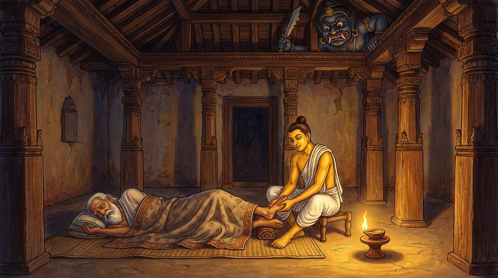

5. භග්ග ජාතකය (155)
“ජීව වස්සසතං භග්ග” (භග්ගය, වසර සියයක් ජීවත් වන්න) යන මේ ධර්ම දේශනාව ශාස්තෘන් වහන්සේ ජේතවනය සමීපයෙහි පසේනදී කොසොල් රජු විසින් කරවන ලද රාජකාරාමයෙහි වැඩ වාසය කරන අතරතුර තමන් වහන්සේගේ කිවිසුමක් අරබයා දේශනා කළ සේක. එක් දිනක් ශාස්තෘන් වහන්සේ රාජකාරාමයෙහි සිව් පිරිස මැද වැඩ හිඳ ධර්මය දේශනා කරද්දී කිවිසුමක් ගිය සේක. එවිට භික්ෂූන් වහන්සේලා “ස්වාමීනි, භාග්යවතුන් වහන්සේ ජීවත් වේවා! සුගතයන් වහන්සේ ජීවත් වේවා!” යැයි උස් හඬින් මහත් ඝෝෂාවක් කළහ. ඒ ශබ්දය හේතුවෙන් ධර්ම කථාවට බාධා ඇති විය. එකල්හි භාග්යවතුන් වහන්සේ භික්ෂූන් ඇමතූ සේක. “මහණෙනි, කිවිසුමක් ගිය විට ‘ජීවත් වේවා’ යැයි කීම හේතුවෙන් ජීවත් වීම හෝ මිය යාම හෝ සිදුවේද?” “එසේ නොවේ ස්වාමීනි.” “මහණෙනි, කිවිසුමක් ගිය විට ‘ජීවත් වේවා’ යැයි නොකිය යුතුය. යමෙක් කියන්නේ නම් දුකුලා ඇවැතක් වේ.” එසමෙහි මිනිස්සු භික්ෂූන් කිවිසු විට “ස්වාමීනි, ජීවත් වේවා” යැයි කියති. භික්ෂූහු විනය නීතිය නිසා කුකුසට පත්ව පිළිතුරු නොදෙති. මිනිස්සු උරණ වූහ. “කෙසේ නම් ශ්රමණ ශාක්යපුත්රයන් ‘ස්වාමීනි, ජීවත් වේවා’ යැයි කියනු ලබන විටත් කතා නොකරන්නේද?” ඔවුහු භාග්යවතුන් වහන්සේට මේ බව දැන්වූහ. “මහණෙනි, ගිහියෝ මංගල සම්මත දෑ අදහන්නෝය. මහණෙනි, ගිහියන් විසින් ‘ස්වාමීනි, ජීවත් වේවා’ යැයි කියනු ලබන විට ‘චිරං ජීව’ (බොහෝ කල් ජීවත් වේවා) යැයි කියන්නට අනුදනිමි.” භික්ෂූහු භාග්යවතුන් වහන්සේගෙන් විමසූහ. “ස්වාමීනි, මේ ‘ජීව-පටිජීව’ (ආසිරි පැතීම සහ පෙරළා ආසිරි පැතීම) කවර කලෙක ඇති වූවක්ද?” ශාස්තෘන් වහන්සේ “මහණෙනි, මේ ආසිරි පැතීම සහ පෙරළා ආසිරි පැතීම පෞරාණික කාලයේ ඇති වූවක්” යැයි වදාරා අතීත කතාව ගෙනහැර දැක්වූ සේක.
අතීතයෙහි බරණැස් නුවර බ්රහ්මදත්ත රජු රාජ්යය කරන සමයෙහි බෝධිසත්වයෝ කාසි රට එක්තරා බ්රාහ්මණ කුලයක උපන් සේක. ඔහුගේ පියා වෙළඳාම් කොට ජීවත් වෙයි. ඔහු දහසය හැවිරිදි බෝධිසත්වයන් ලවා වෙළඳ බඩු (කද මලු ආදිය) උසුලවාගෙන ගම් නියම්ගම්වල හැසිරෙන්නේ බරණැසට පැමිණ, දොරටුපාලකයාගේ නිවසෙහි බත් පිසවා අනුභව කොට, රාත්රියෙහි නවාතැන් පොළක් නොලැබ “අවේලාවේ පැමිණි ආගන්තුකයෝ කොහි වසත්දැ”යි විමසීය. එවිට මිනිස්සු “නගරයෙන් පිටත එක් ශාලාවක් ඇත. එහෙත් එය අමනුෂ්යයන් විසින් අරක් ගන්නා ලද්දකි. ඉදින් කැමති නම් එහි නවතින්න” යැයි කීහ. බෝධිසත්වයෝ “පියාණෙනි එන්න, අපි යමු. යක්ෂයාට බිය නොවන්න. මම ඔහු දමනය කොට ඔබගේ දෙපා මුල හෙළන්නෙමි” යි පවසා පියා ද කැටුව එහි ගිය සේක. ඉක්බිති ඔහුගේ පියා ලෑල්ලක වැතිර සිටියේය. පුතණුවෝ පියාගේ පා සම්බාහනය කරමින් (පිරිමදිමින්) වාඩි වී සිටියහ. එහි වාසය කරන යක්ෂයා දොළොස් වසරක් වෙසමුණි රජුට උපස්ථාන කොට ඒ ශාලාව ලබන්නේ, “මේ ශාලාවට පිවිසි මිනිසුන් අතුරෙන් යමෙක් කිවිසු විට ‘ජීවත් වේවා’ යැයි නොකියයිද, යමෙක් ‘ජීවත් වේවා’ යැයි කියූ විට ‘පෙරළා ජීවත් වේවා’ යැයි නොකියයිද, ඒ ‘ජීව-පටිජීව’ (ආසිරි පැතීම හා පෙරළා ආසිරි පැතීම) කියන්නවුන් හැර අන් අය කෑමට අවසර ඇත” යැයි වරයක් ලැබ සිටියේය. හෙතෙම වහලයේ මුදුන් ලී දරා සිටින කණුවෙහි වසයි. ඔහු “බෝධිසත්වයන්ගේ පියා කිවිසුවන්නෙමි” යි තමාගේ ආනුභාවයෙන් සියුම් කුඩු විශේෂයක් මුදා හැරියේය. ඒ කුඩු අවුත් පියාගේ නාස් පුඩු තුළට පිවිසියේය. හෙතෙම ලෑල්ලේ වැතිර සිටියදීම කිවිසුවේය. බෝධිසත්වයෝ “ජීවත් වේවා” යැයි නොකීහ. යක්ෂයා ඔහු කා දැමීම පිණිස කණුවෙන් බැස ආවේය. බෝධිසත්වයෝ ඔහු බැස එනු දැක “මොහු විසින් මාගේ පියා කිවිසුවන ලද්දේ වෙයි. මොහු වනාහි කිවිසු විට ‘ජීවත් වේවා’ යැයි නොකියන්නවුන් කන යක්ෂයා වනු ඇත” යැයි සිතා පියා අමතා පළමු ගාථාව කීවේය.

“භග්ගය (පියාණෙනි), වසර සියයක් ද තවත් වසර විස්සක් ද ජීවත් වන්න. පිසාචයෝ මා නොකත්වා! ඔබ ඍතු සියයක් ජීවත් වන්න.”
යනුවෙන් පළමු ගාථාව පැවසීය.
එහි භග්ග යනු: පියාට නමින් අමතයි. අපරානි ච වීසතිං යනු: තවත් වසර විස්සක් ජීවත් වන්න. මා මං පිසාචා ඛාදන්තූ යනු: පිසාචයෝ මා නොකත්වා. ජීව ත්වං සරදොසතං යනු: ඔබ වනාහි (මුලින් කී සියයට) විස්සක් අධික වසර සියයක් ජීවත් වන්න යන්නයි. ‘සරදොසතං’ (ශරද් ඍතු සියයක්) යැයි ගණන් ගන්නා විට වසර සියයක්ම වෙයි. එය මුලින් කී විස්ස සමඟ ගත් කල එකසිය විස්සක් බව මෙහි අදහස් කරන ලදී.
යක්ෂයා බෝධිසත්වයන්ගේ වචනය අසා “මේ මානවකයා ‘ජීවත් වේවා’ යැයි පැවසූ බැවින් මොහු කෑමට නොහැක. මොහුගේ පියා කන්නෙමි” යි සිතා පියා සමීපයට ගියේය. හෙතෙම යක්ෂයා එනු දැක “මොහු වනාහි පෙරළා ‘ජීවත් වේවා’ යැයි නොකියන්නවුන් කන යක්ෂයා වනු ඇත. මම පෙරළා ආසිරි පතන්නෙමි” යි සිතීය. ඔහු පුතණුවන් අරබයා දෙවන ගාථාව කීවේය.
“ඔබ ද වසර සියයක් හා තවත් වසර විස්සක් ජීවත් වන්න. පිසාචයෝ විෂ කත්වා! ඔබ ඍතු සියයක් ජීවත් වන්න.”
යනුවෙන් දෙවන ගාථාව කීවේය.
එහි විසං පිසාචා ඛාදන්තු යනු: පිසාචයෝ හලාහල විෂ කත්වා (යන්නයි).
යක්ෂයා ඔහුගේ වචනය අසා “මේ දෙදෙනාම කෑමට මට නොහැක” යි ආපසු හැරුණේය. ඉක්බිති බෝධිසත්වයෝ ඔහුගෙන් විමසූහ. “පින්වත් යක්ෂය, නුඹ කුමක් නිසා මේ ශාලාවට පිවිසෙන මිනිසුන් කන්නෙහිද?” “දොළොස් වසරක් වෙසමුණි රජුට උපස්ථාන කොට (මේ ශාලාව) ලැබූ බැවිනි.” “කිමෙක්ද, සියල්ලන්ම කෑමට ලබන්නෙහිද?” “ජීව-පටිජීව කියන්නවුන් හැර අන් අය කන්නෙමි.” “යක්ෂය, නුඹ පෙරත් අකුසල් කොට, රළු පරළු වී, අනුන්ට හිංසා කරන්නෙකු වී (මෙහි) උපන්නෙහිය. දැනුත් එවැනිම කර්ම කොට අඳුරෙන් අඳුරටම යන්නෙහිය. එබැවින් මෙතැන් පටන් ප්රාණඝාතාදියෙන් වැළකෙව.” මෙසේ ඒ යක්ෂයා දමනය කොට, නිරය භියෙන් තැති ගන්වා, පංචශීලයෙහි පිහිටුවා, යක්ෂයා (තමාට කීකරු) මෙහෙකරුවෙකු මෙන් කර ගත්හ.
පසු දින එහි හැසිරෙන මිනිස්සු යක්ෂයා දැක, බෝධිසත්වයන් විසින් ඔහු දමනය කළ බව දැන රජුට දැන්වූහ. “දේවයන් වහන්ස, එක්තරා මානවකයෙක් ඒ යක්ෂයා දමනය කොට මෙහෙකරුවෙකු මෙන් තබාගෙන සිටියි.” රජතුමා බෝධිසත්වයන් කැඳවා සෙන්පති තනතුරෙහි පිහිටුවීය. ඔහුගේ පියාටද මහත් යසසක් දුන්නේය. හෙතෙම යක්ෂයා බලි පූජා ලබන්නෙකු බවට පත් කළේය. බෝධිසත්වයන්ගේ අවවාදයෙහි පිහිටා දානාදී පින්කම් කොට (මරණින් මතු) ස්වර්ග පුරය පිරවූහ.
ශාස්තෘන් වහන්සේ මේ ධර්ම දේශනාව ගෙනහැර දක්වා “ආසිරි පැතීම හා පෙරළා ආසිරි පැතීම ඒ කාලයේ උපන්නේය” යි වදාරා ජාතකය ගළපා දැක්වූ සේක. “එකල යක්ෂයා වූයේ (දැන්) අංගුලිමාලය. රජතුමා වූයේ ආනන්දය. පියා වූයේ කාශ්යපය. පුත්රයා වූයේ මම ම ය.”
පස්වන වූ භග්ග ජාතක වර්ණනාවයි.